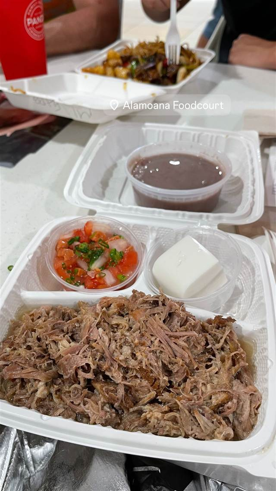

エスニック・各国料理 · ハワイ · ホノルル
Ala Moana Center Food Court (Makai Market Food Court)
1987年開業のフードコートで味わうハワイ定番カルアポーク
Alamoana Foodcourt
アラモアナセンターのマカイマーケット・フードコートは1987年の増床で誕生した、センター内で最も人気のフードコート。「マカイ」はハワイ語で海の方角を意味し、弁当からプレートランチまで多国籍の屋台が並ぶ。
TRIVIA
へえ、という話
- 「マカイ(makai)」はハワイ語で「海の方へ」という意味
- 1987年の増床で誕生し、アラモアナセンターで最も人気のフードコートに成長した
| 創業 | 1987年開業（マカイマーケット、アラモアナセンターのフェーズ3増床時） |
|---|---|
| 看板 | カルアポークなどハワイの定番プレートランチ |
| 場所 | Ala Moana 1450 Ala Moana Blvd, Honolulu, HI 96814 |
| 注意 | 日本の弁当からハワイ料理、韓国・フィリピン・タイ料理まで多国籍の屋台が集まる大型フードコート |
食べたもの：フードコートのカルアポーク
NEARBY
近い店・同じ系統の店
-
 ピザ ホノルル
Round Table Pizza
ピザ ホノルル
Round Table Pizza
-
 ハワイ 六本木駅
POKEDO MARKET（ポケドゥマーケット）
具材を自由に選べる本場ハワイ仕込みのカスタムポケ丼
昼 ¥2,000～¥2,999 夜 ¥3,000～¥3,999
ハワイ 六本木駅
POKEDO MARKET（ポケドゥマーケット）
具材を自由に選べる本場ハワイ仕込みのカスタムポケ丼
昼 ¥2,000～¥2,999 夜 ¥3,000～¥3,999
-
 ハワイ 美浜
808 Poke Bowls Okinawa 北谷店 & Hammerhead Shark Grill 808
ハワイの市外局番にちなむ名の生姜蜂蜜味噌ダレのポケ丼
昼 ¥1,000～¥1,999 夜 ¥1,000～¥1,999
ハワイ 美浜
808 Poke Bowls Okinawa 北谷店 & Hammerhead Shark Grill 808
ハワイの市外局番にちなむ名の生姜蜂蜜味噌ダレのポケ丼
昼 ¥1,000～¥1,999 夜 ¥1,000～¥1,999
-
 ハワイ 牧志駅
ハワイアンフルーツカフェ -the Sea-
久米島の海洋深層水を極薄に削ったマンゴーかき氷
昼 ¥1,000～¥1,999 夜 ¥1,000～¥1,999
ハワイ 牧志駅
ハワイアンフルーツカフェ -the Sea-
久米島の海洋深層水を極薄に削ったマンゴーかき氷
昼 ¥1,000～¥1,999 夜 ¥1,000～¥1,999
-
 ハワイ Kahuku
Giovanni's Original Shrimp Truck (Kahuku店)
1953年式のパン配達トラックを改造して始めたガーリックシュリンプ
ハワイ Kahuku
Giovanni's Original Shrimp Truck (Kahuku店)
1953年式のパン配達トラックを改造して始めたガーリックシュリンプ
-
 ハワイ カパフル
Rainbow Drive-In (Kapahulu)
ヒロの老舗「Cafe 100」直伝レシピのロコモコ
ハワイ カパフル
Rainbow Drive-In (Kapahulu)
ヒロの老舗「Cafe 100」直伝レシピのロコモコ